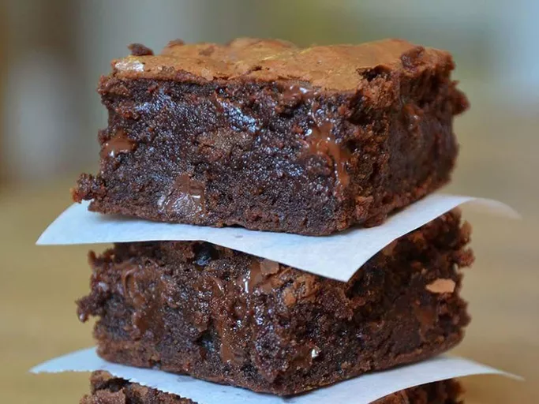

Brownies

Description
Bake these easy brownies whenever you need to
quickly satisfy your sweet tooth. Made with kitchen staples, you'll come back
to this easy brownie recipe again and again.
Make our most popular brownies today to find out what all the fuss is about!
Ingredients
- Sugar
- Flour
- Butter
- Eggs
- Cocoa powder
- Vanilla
- Baking powder
- Salt
- Walnuts
Steps
- Preheat the oven to 350 degrees F (175 degrees C). Grease a 9x13-inch pan.
- Mix sugar, flour, melted butter, eggs, cocoa powder, vanilla,
baking powder, and salt in a large bowl until combined. Fold in chopped walnuts. Spread the batter into the prepared pan.
- Bake in the preheated oven until top is dry and edges have started to pull away from the sides of the pan, about 20 to
30 minutes; cool before slicing into squares.